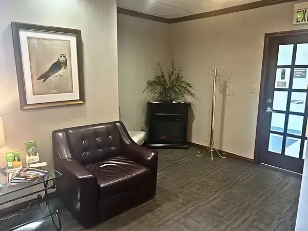
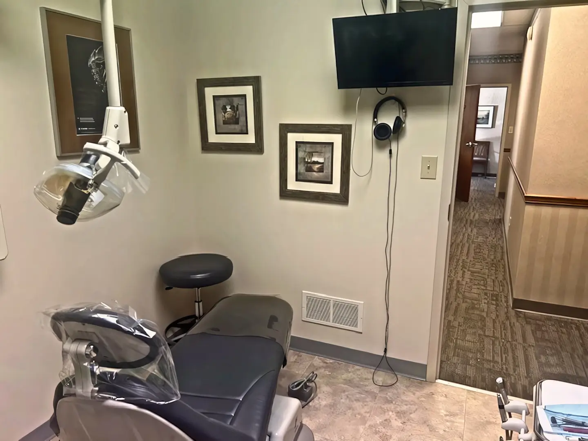

Possible benefits
Less anxiety, with monitored care
IV sedation may reduce anxiety and alter awareness. Depending on the intended level, you may remain awake and responsive.
Wagner Sleep Dental · South Indianapolis
Wagner Sleep Dental offers IV sedation dentistry in South Indianapolis for patients with dental anxiety.
Room to talk about your concerns
IV sedation may reduce anxiety and change awareness during treatment. Local anesthesia serves a different purpose: it numbs the treatment area.
Tell us if past visits, needles, fear of pain, a strong gag reflex or delayed care make dental treatment difficult.
Dr. Wagner considers these concerns alongside your health and planned treatment when discussing your dental care options.

Planning the cost of care? Payment options are available. After evaluation, ask for an itemized estimate and confirm benefits with your exact plan.
Understanding the option
IV sedation delivers sedative medicine through a vein, allowing the team to adjust it during treatment. The intended level of sedation is discussed as part of your plan.
Possible benefits
IV sedation may reduce anxiety and alter awareness. Depending on the intended level, you may remain awake and responsive.
Limits to understand
Sleep dentistry is not a promise of being asleep or remembering nothing. Drowsiness, nausea and slowed breathing are possible, so monitoring and recovery instructions are part of the plan.

Wagner Sleep Dental offers IV sedation. Oral sedation and nitrous oxide are explained here only to show how sedation methods differ.
With IV sedation, sedative medicine is delivered through a vein and the intended level is discussed for your plan.
With oral sedation, sedative medicine is taken by mouth. The route does not guarantee a particular level of awareness.
Nitrous oxide, sometimes called laughing gas, is inhaled through a mask.
General patient information: ADA: anesthesia and sedation · ASA: IV sedation.
Before, during and after
Follow your instructions for eating, drinking and medicines. Arrange the required ride or support.
The team follows the sedation, monitoring and pain-control plan prepared for you.
Leave with your arranged driver or support person and follow the discharge instructions provided.
One office. A clear route.
Wagner Sleep Dental serves South Indianapolis from Shelby Street near County Line Road, with a direct route from nearby Greenwood.
Wagner Sleep Dental 8849 Shelby St. Suite A2On-site parking and wheelchair-accessible access are available. The office is beside Carroll Foot & Ankle Clinic, across from Brookhaven.
Cost and coverage
After your evaluation, ask for an itemized estimate showing what is included in your planned dental care and sedation.
The practice accepts cash, personal checks, debit cards, Visa, Mastercard, American Express and Discover. CareCredit is available; eligibility and terms apply.
If you have Delta Dental, Cigna or Guardian, ask the office to confirm your specific plan and sedation benefits.
Review insurance and payment informationThe dentist behind your care
DDS · Owner dentist
Dr. Susan E. Wagner provides intravenous sedation at Wagner Sleep Dental. Her background includes several years in an emergency dental clinic, substantial tooth-extraction experience and care for patients affected by dental fear.
When warranted, relevant health concerns are coordinated with your primary care physician.
“Such kindness and talked w me cause I was scared ... took just great care of me.”
“The staff was extremely organized and professional and explained everything to me about the procedure and cost.”
Before you get in touch
Tell the team that needles are part of your anxiety. They can explain how the IV is started and answer questions before you decide.
No. IV describes how sedative medicine is delivered, while general anesthesia is a state of unconsciousness. Ask Dr. Wagner about the intended level of sedation for your care.
Arrange the required ride and support before treatment. Follow your discharge instructions before returning to driving, work or other responsibilities.
No. Sleep dentistry is an informal term for dental care with sedation. It is not treatment for sleep apnea.